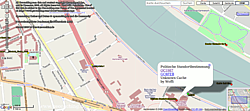

Garmin eTrex Legend HCx
Dieser Artikel wurde für die folgenden Ubuntu-Versionen getestet:
Ubuntu 16.04 Xenial Xerus
Zum Verständnis dieses Artikels sind folgende Seiten hilfreich:
Der eTrex Legend® HCx der Firma Garmin International Inc. ist ein GPS-Empfänger, der einen microSD™-Kartensteckplatz besitzt. Das Gerät untersützt WAAS/EGNOS für eine genauere Positionsberechnung. Als Chipsatz kommt der MediaTek (MTK) zum Einsatz. Das integrierte Interface unterstützt lediglich USB 1.1. Im internen Speicher des Geräts ist eine Basiskarte abgelegt. Außerdem werden Geräteeinstellungen, Tracks, Routen und Wegpunkte hier abgespeichert. Um das Gerät problemlos unter Ubuntu nutzen zu können, sind ein paar Voreinstellungen nötig. Die Anleitung kann auch für das fast baugleiche eTrex Vista® HCx verwendet werden.
Einstellungen¶
Rechte¶
Datentransfer ohne Root-Rechte¶
Das Gerät wird über USB angesprochen. Damit ein Benutzer ohne Root-Rechte [4] auf die Schnittstelle usb: zugreifen kann, ist eine udev-Regel anzulegen. Hier mit Root-Rechten die Datei /etc/udev/rules.d/51-garmin.rules erstellen [1] und die folgenden Zeilen einfügen womit die Rechte der Gruppe plugdev gegeben werden, in der standardmäßig jeder User eines Systems Mitglied ist:
# erlaubt Gruppe plugdev auf Garmin USB lesen und schreiben
SUBSYSTEM!="usb", GOTO="garmin_rules_end"
ACTION!="add", GOTO="garmin_rules_end"
ATTRS{idVendor}=="091e", ATTRS{idProduct}=="0003", MODE="0660", GROUP="plugdev"
LABEL="garmin_rules_end"
Nach einem Neustart des udev-Systems kann man das GPS am Computer anschließen, und die Rechte sind entsprechend gesetzt.
Hinweis:
Ordnerstruktur¶
Auf einer microSD™/microSDHC™-Karte ist die folgende Ordnerstruktur zu erstellen:
| eTrex Legend® HCx | ||
| Ordner | Dateien | Beschreibung |
| / | YYYYMMDD.gpx | Tracks eines Tages werden hier abgelegt - sofern aktiviert. |
| /Garmin | gmapsupp.img | Kartenmaterial wird hier gespeichert. |

Bedienung¶
Grundlegende Beschreibungen zum Umgang mit dem Gerät sind dem Benutzerhandbuch  oder der Schnellstartanleitung zu entnehmen. Für die Kommunikation mit dem PC unter Linux kommen als Ersatz für Mapsource z.B. QLandkarteGT bzw. Viking in Frage.
oder der Schnellstartanleitung zu entnehmen. Für die Kommunikation mit dem PC unter Linux kommen als Ersatz für Mapsource z.B. QLandkarteGT bzw. Viking in Frage.
Hinweis:
Das Positionsformat auf hddd.ddddd° sowie das Map-Datum auf WGS 84 umstellen.
Kartenmaterial¶
Garmin¶
Kartenmaterial von Garmin kann genutzt werden, wenn es als gmapsupp.img vorliegt. Die Karte lediglich nach /Garmin kopieren. Hierzu entweder das Gerät in den Massenspeicher-Modus versetzen oder die microSD™-Karte in einem Kartenlesegerät beschreiben.
OpenStreetMap¶
Karten für das GPS können zwar von OSM genutzt werden, sie sind aber nicht von der Homepage  zu beziehen. Auf der Übersichtsseite finden sich verschiedene verfügbare Karten. Diese liegen meist in einem gepacktenFormat vor und müssen entpackt [2] werden.
Die gmapsupp.img ist dann in den dafür vorgesehenen Ordner der microSD™-Karte kopieren.
zu beziehen. Auf der Übersichtsseite finden sich verschiedene verfügbare Karten. Diese liegen meist in einem gepacktenFormat vor und müssen entpackt [2] werden.
Die gmapsupp.img ist dann in den dafür vorgesehenen Ordner der microSD™-Karte kopieren.
Es gibt neben den oben genannten auch noch speziellere Karten, z.B. für Fahrradfahrer, Skipper, Fußgänger oder Reiter. Anlaufstellen gibt es auf openstreetmaps.org  .
.
Navigation¶
Eine routingfähige Karte auf Basis von OpenStreetMap kann man sich auf garmin.na1400.info erstellen lassen. Nach Auswahl des Kartenausschnitts wird ein Link an die hinterlegte E-Mail-Adresse gesendet, sofern das Kartenmaterial generiert wurde. Hier kann man die Karte im gewünschten Format herunterladen. Alternativ diese Karte verwenden.
Hinweis:
Bis einschließlich Firmware-Version 2.80 darf die Größe der gespeicherten Kartendaten 2 GB nicht überschreiten, da diese nicht mehr verarbeitet werden können. Ab Firmware-Version 3.00 sind auch Kartendaten erlaubt die 2 GB übersteigen garmin.com .
|  |
| OSM-Layer |
Geocaching¶
Um GPS-Schnitzeljagd mit dem Gerät machen zu können, benötigt man zuerst die geographischen Koordinaten des Geocaches, welche man im Internet erhält. Auf der Karte maps.geocaching.de erhält man einen Überblick, welche Caches von geocaching.com oder opencaching.de verfügbar sind. Hier lädt man sich die benötigte .gpx- oder .loc-Datei herunter und überträgt [3] diese auf das GPS mittels GPSBabel. Im folgenden Beispiel wird der Cache OC1987.gpx bzw. geocaching.loc, in der Nähe des Kanzlerbungalow übertragen:
gpsbabel -i gpx -f OC1987.gpx -o garmin -F usb: gpsbabel -i geo -f geocaching.loc -o garmin -F usb:
Im Handbuch ist die weitere Nutzung im Gerät hinterlegt.
Firefox/Chrome-Erweiterung¶
Garmin stellt für Windows und Mac ein Browser-Plugin zur Verfügung, welches es ermöglicht, GPX-Dateien (Geocaches) direkt aus dem Browser an das Gerät zu schicken (auf geocaching.com über "Send to GPS"), oder die Fitnessdaten des Geräts auf einer Webseite hochzuladen. Ein Nachbau des Plugins, welches auch unter Linux funktioniert, findet man unter dem Namen GarminPlugin auf Garmin Communicator Plugin for Linux .
Adresszeile zum Hinzufügen des PPAs:
ppa:andreas-diesner/garminplugin
Hinweis!
Zusätzliche Fremdquellen können das System gefährden.
Ein PPA unterstützt nicht zwangsläufig alle Ubuntu-Versionen. Weitere Informationen sind der  PPA-Beschreibung des Eigentümers/Teams andreas-diesner zu entnehmen.
PPA-Beschreibung des Eigentümers/Teams andreas-diesner zu entnehmen.
Damit Pakete aus dem PPA genutzt werden können, müssen die Paketquellen neu eingelesen werden.
Um die Geocaches von geocaching.com auf das Gerät übertragen zu können, muss der Seite anhand der Firefox-Erweiterung User Agent Switcher ein Windowssystem vorgegaukelt werden (ab Plugin Version 0.2.7 ist dies nicht mehr nötig). Beim ersten Ausführen werden die Dateien ~/.config/garminplugin/garminplugin.xml oder ~/.garminplugin.xml im Homeverzeichnis angelegt. Diese Konfigurationsdateien sollten mit einem Editor [1] noch angepasst werden.
Der Aufbau der Beispieldatei ohne Änderungen:
1 2 3 4 5 6 7 8 9 10 11 12 13 14 15 16 17 18 | <?xml version="1.0" encoding="UTF-8" standalone="no" ?> <GarminPlugin logfile="" level="DEBUG"> <Devices> <Device> <Name>Oregon 300</Name> <StoragePath>/media/5D18-F276/Garmin/GPX</StoragePath> <StorageCommand></StorageCommand> </Device> <Device> <Name>Home Directory /home/andreas</Name> <StoragePath>/home/andreas</StoragePath> <StorageCommand></StorageCommand> </Device> </Devices> <Settings> <ForerunnerTools enabled="true" /> </Settings> </GarminPlugin> |
Über <StorageCommand>gpsbabel -i gpx -f %1 -o garmin -F usb:</StorageCommand> können nach dem Herunterladen der Datei Befehle ausgeführt und die Geocaches z.B. an das Gerät übertragen werden. %1 ist der Platzhalter für die zuvor gespeicherte Datei.
Anschließend muss man den Browser neu starten.
Beim etrex Vista HCx kann folgender Fehler auftreten: Das Gerät schaltet sich beim Übertragen der Geocache-Koordinaten einfach aus, die Daten werden letztendlich nicht übertragen, und es erscheint eine Fehlermeldung im Browser. Die Ursache hierfür ist der Versuch, einen Edge305/Forerunner305 über die automatische Erkennung zu finden. Diese Erkennung kann in der Konfiguration über
<ForerunnerTools enabled="false" />
deaktiviert werden. Sollte es danach immer noch zu Problemen kommen hilft es, obigen Eintrag in
<StorageCommand>gpsbabel -w -Sn -i gpx -f %1 -o garmin -F usb:</StorageCommand>
zu ändern. Dies schaltet bei gpsbabel explizit die Waypoint-Verarbeitung ein und kontrolliert die Cache-Bezeichnung.
GPX Download mit Bordmitteln¶
Eine andere einfache Möglichkeit nutzt die Möglichkeit, mit der Datei ~/.mailcap Standardaktionen beim Download zu hinterlegen. In diesem Falle wird ein Skript gpx2garmin.sh gestartet, das die heruntergeladene gpx-Datei gleich auf den Etrex schiebt. Es wird lediglich neben dem oben erwähnten GPSBabel das Paket
zenity
 mit apturl
mit apturl
Paketliste zum Kopieren:
sudo apt-get install zenity
sudo aptitude install zenity
benötigt.
Wenn man in der Datei ~/.mailcap folgende Zeile anfügt:
application/gpx; /opt/gpx2garmin.sh %s
und dann das Skript
1 2 3 4 5 6 7 8 9 10 11 12 | #!/bin/bash # datei /opt/gpx2garmin.sh mv $1 $1.gpx /usr/bin/gpsbabel -s -i gpx -f $1.gpx -o garmin -F usb: 2> /tmp/garmin_error if [ -f /tmp/garmin_error ] && [ "`cat /tmp/garmin_error`" ] then error=`cat /tmp/garmin_error` zenity --error --text="Fehler bei der Übertragung:\n\n'$error'" else zenity --info --text="Daten wurden erfolgreich auf den GPS-Empfänger übertragen." fi rm -f /tmp/garmin_error %1 |
mit Rootrechten in der Datei /opt/gpx2garmin.sh ablegt und diese dann ausführbar macht, erscheint beim Download einer gpx-Datei ein Firefox-Download Fenster mit der Frage, ob die Datei mit dem Skript geöffnet werden soll. Wenn man bestätigt, wird die Datei gleich auf den GPSr übertragen.
Wer kein Premium-Member bei Geocaching.com ist, bekommt nur das loc.-Format (ohne Waypoints). Analog dazu lautet die entsprechende Zeile für die Datei ~/.mailcap
application/xml-loc; /opt/loc2garmin.sh %s
und das entsprechende Skript in der Datei /opt/loc2garmin.sh
1 2 3 4 5 6 7 8 9 10 11 12 | #!/bin/bash # datei /opt/loc2garmin.sh mv $1 $1.loc /usr/bin/gpsbabel -s -i geo -f $1.loc -o garmin -F usb: 2> /tmp/garmin_error if [ -f /tmp/garmin_error ] && [ "`cat /tmp/garmin_error`" ] then error=`cat /tmp/garmin_error` zenity --error --text="Fehler bei der Übertragung:\n\n'$error'" else zenity --info --text="Daten wurden erfolgreich auf den GPS-Empfänger übertragen." fi rm -f /tmp/garmin_error %1 |

Software¶
Eine Reihe von Programmen ist verfügbar – diese sind hier zu finden. Garmins mitgelieferte Software MapSource lässt sich mit Hilfe von Wine ebenfalls nutzen.
GPSBabel¶
GPSBabel kann neben anderen Programmen zum Auslesen und Aufspielen von Tracks und Wegpunkten verwendet werden. Darüber hinaus können Daten mit dem Programm konvertiert werden. Die Verwendung des Programms ist unter GPSBabel beschrieben - deshalb hier nur eine Auflistung der wichtigsten Befehle:
| gpsbabel | |
| Befehl | Beschreibung |
gpsbabel -D9 -w -i garmin -f usb: -o gpx -F WP.gpx | Importieren der Wegpunkte. |
gpsbabel -D9 -t -i garmin -f usb: -o gpx -F TP.gpx | Track auslesen. |
gpsbabel -i gpx -f NAME.gpx -o garmin -F usb: | Die Datei NAME.gpx ans Gerät senden. |
gpsbabel -t -i garmin -f usb: -o kml,points=0,line_color=ff0000ff -F Track.kml | Track auslesen und in Keyhole_Markup_Language umwandeln. |
Tipps¶
/dev/ttyUSBx¶
Wenn das Gerät als /dev/ttyUSBx eingebunden werden soll (z.B. bei Verwendung mit Wine), muss das garmin-gps-Modul geladen werden. Ebenfalls muss das Paket modemmanager gelöscht werden, da dieses ebenfalls auf die Schnittstelle zugreift und so für das Gerät nicht mehr benutzbar ist. Des weiteren muss am Gerät unter "Interface" das Datenformat "Garmin" eingestellt sein.
Hinweis:
Damit ist das Gerät aber nicht mehr für die nativen Anwendungen erreichbar.
Diagnose-Modus¶
Um in den Diagnose-Modus zu gelangen den Joystick gedrückt halten und das Gerät anschalten. Neben der aktuell verwendeten Software Version, wird hier u.a. die aktuelle Temperatur angezeigt.
Firmware¶
Die Firmware des Geräts sollte aktuell sein, da mitunter Fehler behoben und Neuerungen eingespielt werden. Die Änderungen sind auf garmin.com zu ersehen. Weitere Informationen gibt es im Artikel Garmin/Firmware.
Hinweis:
Um FAT32 nutzen zu können, ist bei einer Firmwareversionsnummer < 3.0 ein Firmwareupdate erforderlich. Hier unter Windows den Webupdater verwenden.
Dateiübertragung¶
Da das Gerät lediglich USB 1.1 unterstützt, ist es bei der Übertragung großer Dateien empfehlenswert, die Speicherkarte in einem USB 2.0-tauglichen Kartenleser zu beschreiben.
Problemlösungen¶
Speicherkarte¶
Je nach verwendeter Firmware ist eine Speicherkarte wie folgt zu formatieren:
| Speicherkarte | ||
| Gerätesoftware | Kartentyp | Dateisystem |
| 2.9 | microSD™ | FAT16 |
| 3.0 | microSD™/microSDHC™ | FAT32 |
Zugriff¶
Sofern man keinen Zugriff auf das Garmin erhält, sollte man zuerst herausfinden, in welchen Gruppen man ist - ohne die entsprechenden Rechte erhält man als normaler Benutzer keinen Zugriff auf das Gerät. Außerdem sollte man überprüfen, ob ggf. das Modul garmin-gps geladen wurde - sofern dies der Fall ist, muss das Modul entladen werden.
Tracks nach Openstreetmap hochladen¶
Problem: ein im Garmin gespeicherter und mit einer Bezeichnung versehener Track verliert seine Zeitangaben, so dass er nicht nach OpenStreetMap hochgeladen werden kann.
Lösung: das Skript von Farzaneh Sarafraz nutzen, um das Problem zu beheben. Man speichert das Script als ~/bin/doctor.py im Homeverzeichnis und macht es ausführbar [5].
1 2 3 4 5 6 7 8 9 10 11 12 13 14 15 16 17 18 19 20 | #!/usr/bin/python import sys infile = open(sys.argv[1],'r') l = infile.readlines() infile.close() t = l[7] ll = [] for i in range(len(l)): ll.append(l[i]) if l[i].lstrip().startswith('<ele>'): if not l[i+1].lstrip().startswith('<time>'): ll.append(t) outfile = open(sys.argv[1][:-4] + '-doctored.gpx','w') outfile.writelines(ll) outfile.close() |
Der Aufruf [3] sieht wie folgt aus:
python doctor.py Dateiname.gpx
Dadurch erhält man die neue Datei Dateiname-doctored.gpx, ohne dass die Originaldatei verändert wird.
Hinweis:
Man sollte sicherstellen, dass der Track in der Datei Spur.gpx in Zeile 8 die Zeit in der Form "<time>" enthält. Ist dem nicht so, muss man die Datei umändern, um dies zu erreichen.
Spezifikationen¶
| eTrex Legend® HCx / eTrex Vista® HCx | |
| Abmessungen | 10.7 x 5.6 x 3.0 cm |
| Display | 256 Farben TFT / Auflösung 176 x 220 Pixel / Abmessung 3.3 x 4.3 cm |
| Schnittstelle | USB 1.1 |
| Speicherkarte | microSD™ / microSDHC™ |
| Gewicht | 156g |
| Batterien | 2 x AA (25 Stunden / Alkali-Mangan-Batterie) |
| Zeichensatz | ISO 8859-15 (Latin-9, Westeuropäisch) |
| Elektronischer Kompass | Vista |
| Barometrischer Höhenmesser | Vista |

- Erstellt mit Inyoka
-
 2004 – 2017 ubuntuusers.de • Einige Rechte vorbehalten
2004 – 2017 ubuntuusers.de • Einige Rechte vorbehalten
Lizenz • Kontakt • Datenschutz • Impressum • Serverstatus -
Serverhousing gespendet von